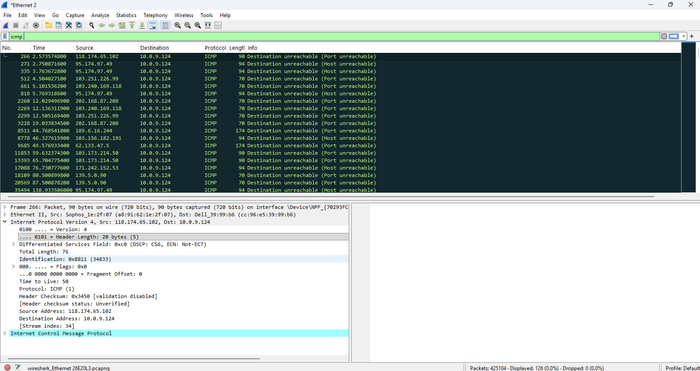

Capture and analyze ICMP packets using Wireshark.
ping 127.0.0.1
icmp
This project demonstrates how network traffic can be captured and analyzed using Wireshark. The ICMP packets generated using ping command are filtered and analyzed to understand source IP, destination IP and echo request and reply.
